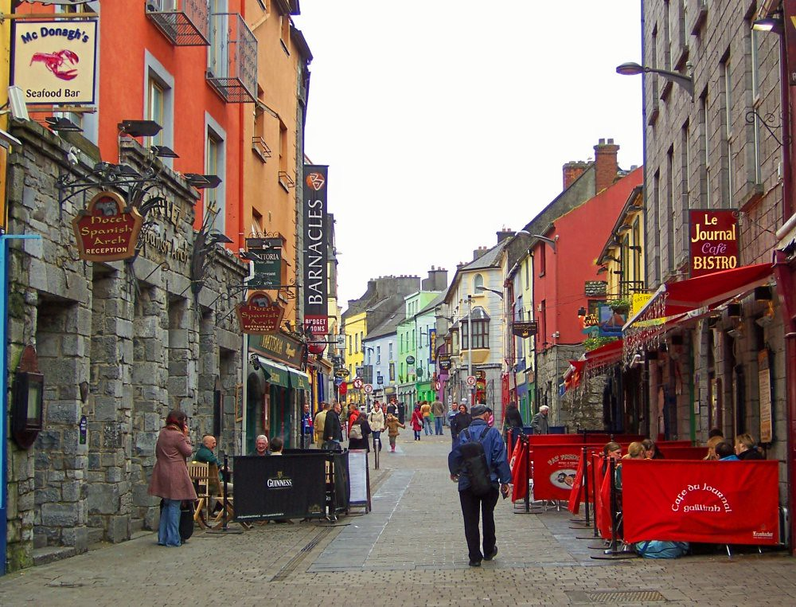
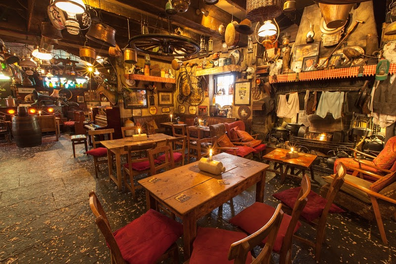

Galway to miasto w zachodniej Irlandii, stolica hrabstwa Galway.
Liczy 75 529 mieszkańców. Według spisu ludności z 2006 roku,
w latach 2002–2007 było to najszybciej rozwijające się miasto Irlandii.
Jest to jedyne miasto regionu Connacht mające status city.

Najciekwsze miejsca w Galway
Mimo tego że Galway nie jest dużym miastem,
to jest w nim bardzo wiele miejsc wartych zobaczenia.
 Łuk z kamiania u wybrzerza kanału Łuk z kamiania u wybrzerza kanału |
|
|---|---|
| Quay street | Piękna uliczka, pełna wszelkiego rodzaju pub'ów i restauracji |
| O'Connor's Pub | Malowniczy pub w którym nakręcono teledysk do piosenki "Galway girl" Ed'a Sheeran'a |
To jest jedynie mały wycinek ze wszystkich
cierkawych miejsc w Galway.